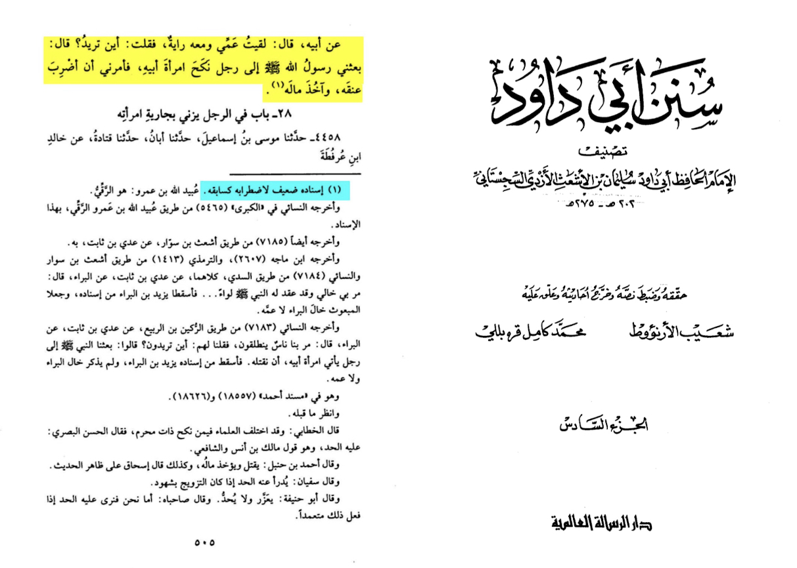

Abi Dawid 4457 barbaric
Home
About
Contact
Shop
For this hadith it is weak because of itirab (distortion) in the hadith like al-arna’ut said in his tahquiq (Sūnān ābī dāwūd [5/505] footnote no.1 hadith no.4457)  But most scholars see that a person who marries his mehram do be penalized